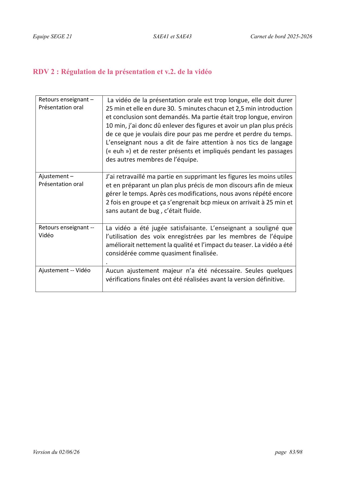

L1 · SAÉ13
Sciences à la une
Animation sur l’eau et la pollution : mon carnet décrit une démonstration retirée pour tenir le temps et mon envie de mieux faire participer le public.
Compétence · Repères de formation
Rendre un contenu scientifique compréhensible, avec un langage et un support adaptés au public, sans perdre sa justesse.
Université de Toulon · Licence Sciences de la Vie
Ces repères décrivent les attendus de la formation. Ils ne constituent pas une validation de mes acquis. Les extraits du dossier indiquent ce qui est effectivement documenté.
 Agrandir le référentiel
Agrandir le référentielLes travaux de mon parcours
L1 · SAÉ13
Animation sur l’eau et la pollution : mon carnet décrit une démonstration retirée pour tenir le temps et mon envie de mieux faire participer le public.
L2 · SAÉ33
J’ai adoré écrire cette revue. Ma section signée est consultable ; elle rassemble des méthodes issues de la littérature.
Voir la preuveL2 · SAÉ43
Cet oral m’a aidé à prendre confiance en moi. Mon carnet décrit des répétitions et le retrait de figures pour respecter le temps. La captation de mon intervention est consultable ci-dessous.
En SAÉ13, nous présentions une animation sur l’eau et la pollution à partir du travail sur les radis. Mon carnet garde la trace du décalage entre nos idées et le temps disponible.
« Une démonstration a dû être enlevée pour rentrer dans les temps impartis. »
Transcription de mon carnet SAÉ13, rubrique « Adaptations réalisées en cours d’animation » ; orthographe régularisée. Le carnet est conservé parmi mes documents originaux.
Pour ENSO, mon carnet décrit ensuite des répétitions, le retrait de figures et le passage de dix à cinq minutes pour ma partie. Le but est de rendre l’essentiel compréhensible dans le temps prévu.

Agrandir la preuveSavoirs : un support et un vocabulaire doivent correspondre au public. Savoir-faire : sélectionner les figures et ajuster la durée par les répétitions. Savoir-être : écouter les retours et prendre confiance à l’oral.
La présentation d’ENSO en amphi m’a aidé à prendre confiance en moi. J’ai aussi adoré écrire la revue sur Karenia : ce sont deux manières différentes de communiquer que j’ai aimé découvrir.
L2 · SAÉ41–43 · ENSO
Avec mon groupe, nous avons travaillé sur El Niño et La Niña. Le teaser donne envie de découvrir le sujet ; l’oral en amphi permet d’expliquer les résultats à partir des figures et du diaporama.
Une production collective, publiée sur UTLN.Pod par Valentin Rodriguez. Je la présente comme un support du groupe, sans m’attribuer seul sa réalisation.
Je parle au début de cet extrait. La vidéo s’arrête au passage du micro à ma camarade, vers 1 min 34 s. On me voit expliquer les figures projetées et accompagner mon propos par des gestes.
Présenter ENSO en amphi m’a aidé à prendre confiance en moi. Le carnet montre le travail en amont : répéter, enlever des figures et réduire ma partie pour tenir dans le temps. La vidéo permet de voir comment je prends la parole devant le public.
La problématique, la recherche bibliographique et les supports permettent de replacer ces vidéos dans le travail scientifique.
Les premiers extraits de communication sont réunis ici. Le dossier complet par composantes reste à développer.